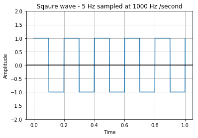
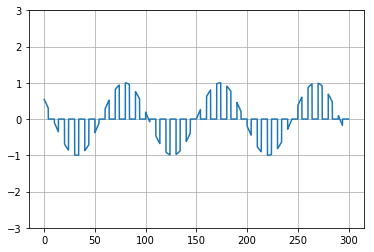

Waveform generation
An electronic pulse that has the waveform of a Gaussian distribution( a distribution that resembles a bell curve). When the magnitude of the waveform is expressed as a function of time, the Gaussian pulse magnitude, at any time t, is given by the following relation
\[A_{t} = A_{0} e^{-x} \]
\[x = (t/σ)^{2}\]
- A0 is the maximum magnitude,
- t is time
- σ is the pulse half-duration
On a conventional time plot of a Gaussian pulse, the equation yields only the right half of the pulse. The left half is a mirror image, thus producing a curve that nearly looks like a bell when the peaks and ends are slightly rounded. Square waves, pulses with discontinuities, and pulses with nearly instantaneous transitions, i.
Let us now look into the gaussian pulse function and generaton of the same
from scipy import signal
import matplotlib.pyplot as plt
import numpy as np
#Creating a variable t from -1 to 1
t = np.linspace(-1, 1, 2 * 100, endpoint=False)
# calling the gaussian function
i, q, e = signal.gausspulse(t, fc=5, retquad=True, retenv=True)
plt.plot(t, i, t, q, t, e, '--')
plt.show()

Generation of Square wave
from scipy import signal
import matplotlib.pyplot as plot
import numpy as np
# Sampling rate 1000 hz / second
t = np.linspace(0, 1, 1000, endpoint=True)
# Plot the square wave signal
plot.plot(t, signal.square(2 * np.pi * 5 * t))
plot.title('Sqaure wave - 5 Hz sampled at 1000 Hz /second')
plot.xlabel('Time')
plot.ylabel('Amplitude')
plot.grid(True, which='both')
plot.axhline(y=0, color='k')
plot.ylim(-2, 2)
plot.show()

Plusle Amplitude modulation
import numpy as np
import matplotlib.pyplot as plt
percent=40.0
TimePeriod=10.0
Cycles=30
dt=0.01
t=np.arange(0,Cycles*TimePeriod,dt);
pwm= (t%TimePeriod) < (TimePeriod*percent/100)
x=np.linspace(-10,10,len(pwm))
y=(np.sin(x))
y[pwm == 0] = 0
plt.plot(t,y)
plt.ylim([-3,3])
plt.grid()
plt.show()
